Chèn vật thể và mô phỏng thời tiết trên point cloud nuScenes,
đúng vật lý cảm biến, có sẵn nhãn.
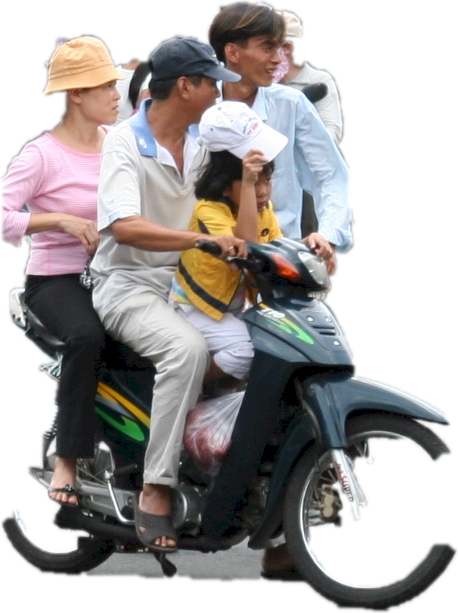
Đầu ra: point cloud .bin · .pcd · .ply + nhãn 3D, dùng ngay để huấn luyện và kiểm thử.
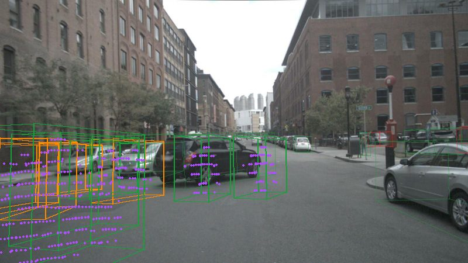
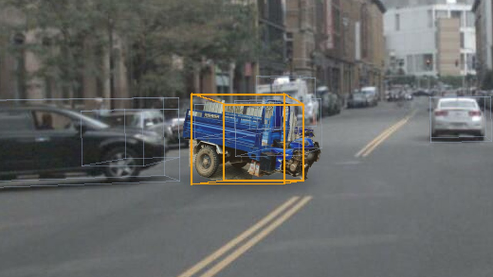
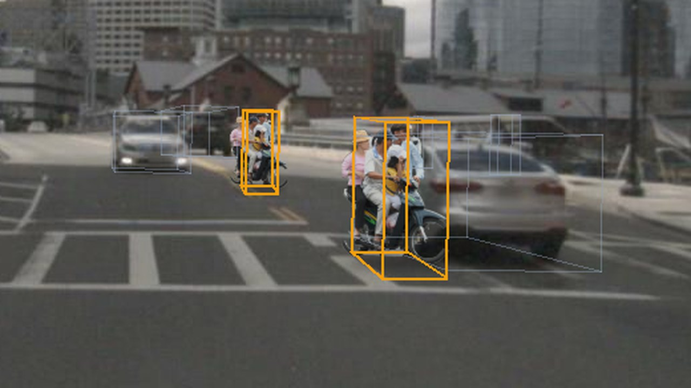
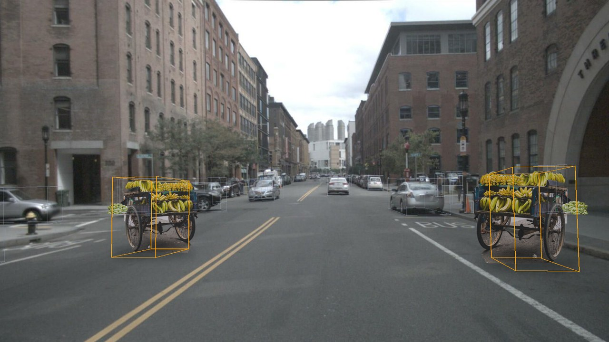
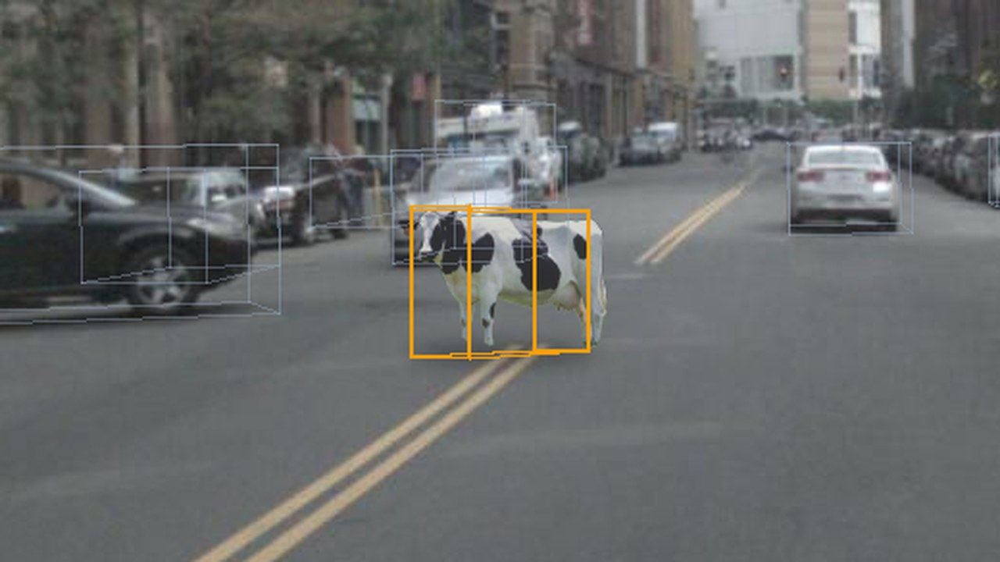
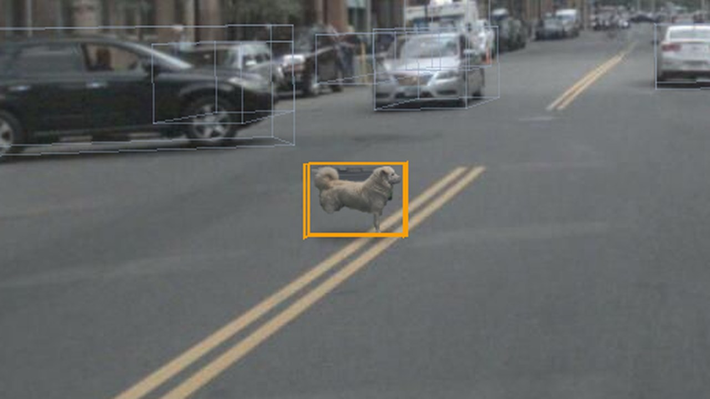
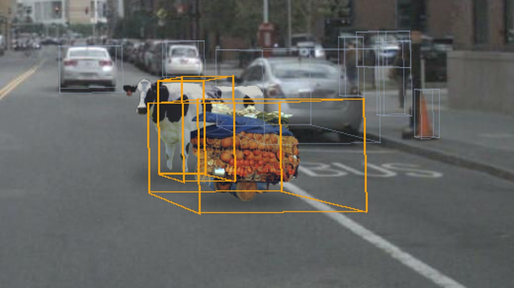
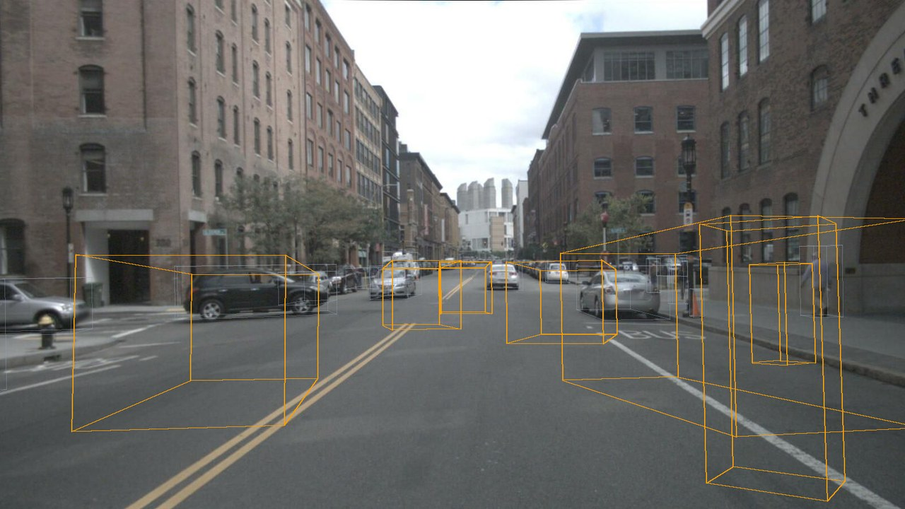
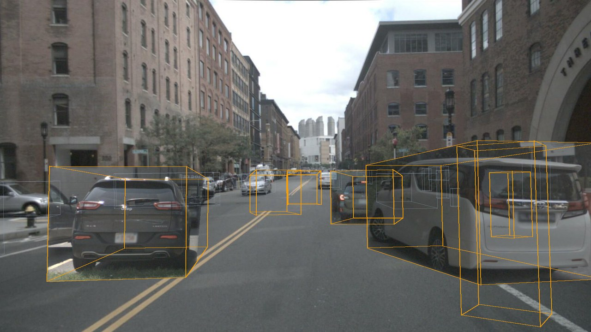
Chỉ nhãn 3DĐồng bộ ảnhẢnh vật thể cắt từ chính ảnh gốc của nó, biến đổi phối cảnh theo 8 góc hộp 3D.
Kéo thanh trượt để so sánh
Mỗi cảnh được kiểm tra lại độc lập sau khi sinh: bản đồ, va chạm, mặt đất.
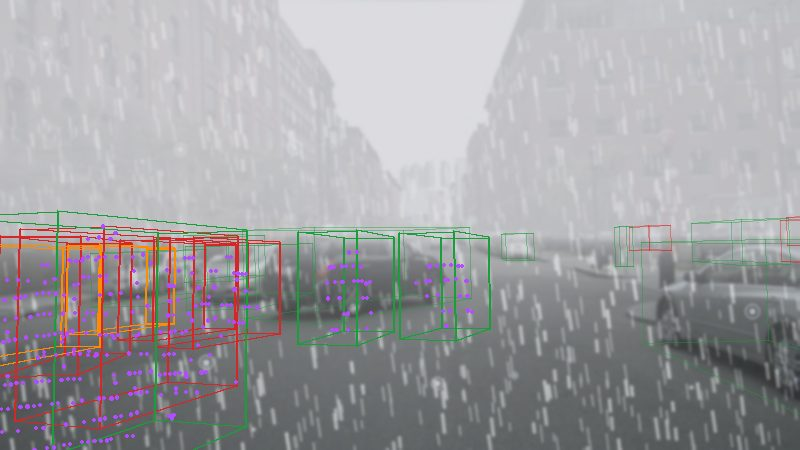
Sẵn sàng mở rộng lên nuScenes đầy đủ và dữ liệu LiDAR thu tại Việt Nam.
Cảm ơn hội đồng đã lắng nghe